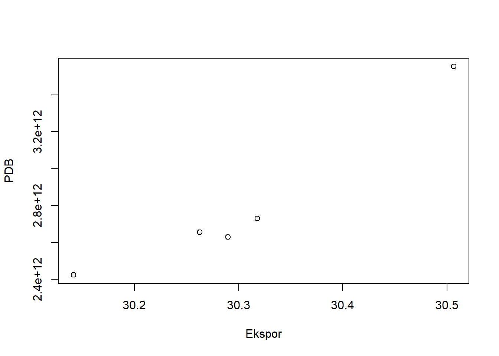

library(tidyverse)
library(WDI)
library(writexl)Analisis Ekspor Negara China Terhadap GDP Periode 2017-2021
Metode Penelitian Politeknik APP Jakarta
1 Pendahuluan
1.1 Latar belakang
Republik Rakyat Tiongkok (China) menempati wilayah yang sangat luas di Asia yang meliputi sebagian besar daratan Asia dan memiliki jumlah penduduk terbesar di dunia. Belakangan ini China begitu menarik perhatian dunia karena perkembangan perekonomiannya yang melesat naik mengejar ketertinggalannya dari negara-negara lainnya maka dari itu China menjadi salah satu kekuatan utama ekonomi dunia yang kini telah diakui oleh dunia internasional. Kemajuan ini terkait erat dengan transformasi dan keterbukaan China. China dalam masa transformasinya mengejutkan negara-negara Barat. Negara ini menjadi sumber pekerja, mitra, pelanggan dan pesaing, sehingga banyak perusahaan asing yang tertarik dalam investasi dan melakukan bisnis. China sekarang berada di jalur yang tepat untuk mencapai tujuannya menjadi raksasa ekonomi global dalam satu generasi.
Berdasarkan data yang dirilis Dana Moneter Internasional (IMF) PDB China berada di urutan teratas dengan nilai PDB US$ 25,27 triliun. Menurut bank dunia Keberhasilan pembangunan ekonomi China yang lebih cepat dari negara maju lainnya, seperti Inggris yang memerlukan waktu 58 tahun dan Amerika Serikat 47 tahun, Jepang berkisar 38 tahun untuk menaikkan tingkat GDP nya namun China hanya memerlukan yaitu sekitar 8,6 tahun untuk menggandakan pendapatan perkapitanya dan bangkit dari keterpurukkan sehingga dapat menguasai ekonomi global (Yulu, 2019). Salah satu peluang ekonomi China yang tidak bisa dipungkiri adalah kekuatan pasarnya. Hal ini tidak terlepas dari pesatnya industri manufaktur China, sejalan dengan perkembangan ekonomi China yang terus berlanjut. Dari sudut pandang perusahaan multinasional atau MNC, China adalah “world’s factory”, itulah sebabnya banyak perusahaan global beroperasi di China. China memainkan peran penting dalam dinamika ekonomi global. China merupakan salah satu tujuan utama investasi asing langsung (FDI) global. Potensi ekonomi lain yang terlihat adalah jumlah karyawan yang besar. Angka tenaga kerja produktif China saat ini tetap stabil selama beberapa dekade terakhir.
Pemerintah China juga telah menarik investor asing untuk tujuan modernisasi. Pemerintah mendorong perusahaan-perusahaan asing ini untuk menggunakan pekerja China dan mengajari mereka untuk menggunakan teknologi terbaru mereka untuk menanamkan pengetahuan kepada negara yang terbelakang secara teknologi ini dan memicu revolusi industri berikutnya. Hasil dari kebijakan pemerintah tersebut dirasakan oleh masyarakat Republik Rakyat Tiongkok saat ini. Akibat transfer teknologi, banyak produk industri dan teknologi China mulai beredar di pasar. Hal ini menyebabkan industri teknologi berkembang dengan sangat pesat, bahkan produk yang dihasilkannya tidak hanya beredar di pasar dalam negeri, tetapi menyebar ke seluruh dunia.
Pada tahun 2020 Tiongkok menjadi negara eksportir terbesar di dunia. Nilai ekspor Negeri Tirai Bambu pada 2020 mencapai US$2.591,12 miliar atau hampir dua kali lipat nilai ekspor Amerika Serikat. Komoditas ekspor unggulan Tiongkok adalah mesin dan peralatan angkut, dengan nilai ekspor mencapai US$1,2 triliun. Selain mesin dan peralatan angkut, Tiongkok juga banyak mengekspor besi dan baja, tekstil, dan peralatan pengobatan. Negara-negara utama yang menjadi tujuan ekspor Tiongkok tahun 2020 adalah Amerika Serikat (US$452,58 miliar), Hong Kong (US$272,65 miliar), Jepang (US$142,64 miliar), Vietnam (US$113,81 miliar), dan Korea Selatan (US$112,5 miliar).
1.2 Ruang lingkup
Berdasarkan latar belakang penelitian dan identifikasi masalah, batasan masalah penelitian sangat penting dalam mendekatkan pada pokok permasalahan yang akan dibahas. Hal ini agar menghindari adanya penyimpangan masalah agar penelitian lebih terarah. Dalam penelitian ini akan lebih menganalisa pada pengaruh GDP terhadap ekspor negara China. Penelitian ini juga menganalisa bagaimana metode analisis yang dapat digunakan untuk membuat visualisasi data dan regresi dari GDP dan ekspor negara china serta membahas deskripsi atau gambaran singkat dari data yang sudah divisualisasi dan regresikan sebelumnya.
1.3 Rumusan masalah
- Bagaimana pengaruh GDP ekonomi terhadap ekspor pada negara China?
- Apakah hubungan GDP terhadap ekspor dapat dikatakan signifikan?
- Bagaimana interpretasi regresi pengaruh GDP dan ekspor pada negara China?
1.4 Tujuan dan manfaat penelitian
Tujuan penelitian ini adalah untuk menampilkan hasil data visual dan hasil regresi serta menyimpulkan apakah GDP berpengaruh terhadap ekspor pada negara China.
Beberapa manfaat dari penelitian ini, yaitu:
1. Mengetahui pengaruh GDP ekonomi terhadap ekspor pada negara China
2. Mengetahui hubungan GDP terhadap ekspor apakah dapat dikatakan signifikan
3. Menyimpulkan hasil regresi pengaruh GDP dan ekspor pada negara China
1.5 Package
2 Studi pustaka
2.1 Gross Domestic Product (GDP)
Indikator penting untuk mengetahui kondisi perekonomian suatu negara pada suatu periode tertentu adalah data Gross Domestic Product (GDP), baik atas dasar harga berlaku maupun atas dasar harga konstan (BPS). GDP pada dasarnya adalah total nilai tambah yang dihasilkan oleh semua unit bisnis di suatu negara, atau total nilai produk dan jasa akhir yang diproduksi oleh semua unit bisnis. GDP atas dasar harga berlaku menggambarkan nilai tambah barang dan jasa yang dihitung atas dasar harga tahunan, sedangkan GDP atas dasar harga konstan menunjukkan nilai tambah atas barang dan jasa tersebut yang dihitung atas dasar harga tahunan. GDP atas dasar harga berlaku dapat digunakan untuk mendeteksi perubahan dan struktur perekonomian, sedangkan harga tetap digunakan untuk mengetahui pertumbuhan ekonomi dari tahun ke tahun (BPS).
2.2 Ekspor
Saat ini tidak ada negara yang dapat hidup tanpa berhubungan dengan negara lain. Semua negara di dunia selalu terhubung dengan negara lain dengan cara yang berbeda. Hubungan tersebut tidak terbatas pada hubungan pemerintahan, tetapi juga pada korporasi dan individu. Hubungan antar perusahaan terutama dalam bentuk bisnis. Perdagangan dengan pihak-pihak dari lebih dari satu negara dikenal sebagai perdagangan internasional atau bisnis internasional (Adrian Sutedi, 2014).
Perdagangan luar negeri adalah kegiatan perdagangan antar Negara, dimana diantara keduanya akan timbul saling tukar menukar produk barang. Pengiriman barang ke suatu Negara oleh satu Negara karena ada permintaan dari pembeli di Negara tersebut atau tidak dinamakan perdagangan ekspor (Risa, 2018).
Ekspor adalah perdagangan dengan cara mengeluarkan atau mengirimkan barang dari dalam wilayah pabean keluar wilayah suatu Negara. Berdasarkan pengertian, maka jelas yang dikategorikan ekspor menurut ketentuan di bidang ekspor secara khusus yaitu kawasan berikat yang dikelola oleh kawasan berikat Indonesia. Kawasan berikat tersebut merupakan daerah atau kawasan di luar pabean Indonesia (Risa, 2018).
2.3 World Development Indicators (WDI)
World Development Indicators adalah database yang berisi informasi tentang indikator yang mempengaruhi pembangunan negara. Berbagai informasi seperti nama negara, kode negara, sistem perdagangan yang digunakan, kategori pendapatan, survey dan masih banyak lagi tersimpan dalam database. Informasi tersebut dihimpun oleh Bank Dunia, salah satu organisasi internasional yang memiliki misi membantu negara berkembang berkembang menjadi negara maju, khususnya dalam pembangunan ekonomi. Kumpulan data World Development Indicators berisi catatan negara-negara di dunia, catatan ini mencakup sistem perdagangan, kelompok pendapatan, mata uang, dan lainnya (Kamseno & Satya, 2017).
3 Metode penelitian
3.1 Data
| Negara | Tahun | PDB | Ekspor |
|---|---|---|---|
| China | 2017 | 30.14147 | 28.51652 |
| China | 2018 | 30.26254 | 28.60769 |
| China | 2019 | 30.28988 | 28.59760 |
| China | 2020 | 30.31803 | 28.63528 |
| China | 2021 | 30.50651 | 28.89896 |
Berdasarkan data pada table diatas, ekspor negara china dalam kurun 5 tahun dari segi PDB mengalami peningkatan untuk segi ekspor mengalami fluktuatif namun stabil. Angka ekspor China yang stabil tersebut semakin membuktikan bahwa mereka salah satu raksasa perekonomian dunia. Wabah pandemi covid di China yang berawal pada tahun 2019 memang mempengaruhi angka ekspor negara China. Namun, tidak membuat angka ekspor negara China turun drastis melainkan China mencatat beberapa kentungan. Keuntungan ini muncul setelah adanya permintaan global yang kuat untuk barang kesehatan, dan barang-barang yang diperlukan untuk mengatasi pandemi. Di sisi lain, pemulihan pabrik yang cepat juga menjadi faktor yang mendukung. Rangkaian indikator awal menunjukkan pemulihan ekonomi China dari pandemi virus corona telah meningkat, dengan survei manufaktur menunjukkan pesanan ekspor baru berkembang lebih cepat.
Penelitian ini menggunakan data sekunder dengan mengambil data dari World Development Indicators. Bentuk data yang digunakan berupa data time series yang berisi rentang waktu nilai PDB dan Ekspor China selama kurun 5 tahun yaitu periode 2017-2021.
library(tidyverse)
library(readxl)
setwd("C:/Metopel UAS")
dat<-read_excel("regresi.xlsx")
reg1<-lm(LPDB~Lexport,data=dat)
summary(reg1)
Call:
lm(formula = LPDB ~ Lexport, data = dat)
Residuals:
1 2 3 4 5
-0.043687 -0.002847 0.033371 0.028368 -0.015205
Coefficients:
Estimate Std. Error t value Pr(>|t|)
(Intercept) 5.0893 3.6279 1.403 0.25525
Lexport 0.8800 0.1266 6.950 0.00611 **
---
Signif. codes: 0 '***' 0.001 '**' 0.01 '*' 0.05 '.' 0.1 ' ' 1
Residual standard error: 0.03682 on 3 degrees of freedom
Multiple R-squared: 0.9415, Adjusted R-squared: 0.922
F-statistic: 48.31 on 1 and 3 DF, p-value: 0.00611plot(dat$LPDB,dat$export,ylab="PDB",xlab="Ekspor")
3.2 Metode analisis
Metode ini menggunakan regresi univariat atau Ordinary Least Square (OLS) dengan menggunakan 1 variabel independen. Penelitian ini dibuat untuk mencari hubungan antara PDB dan Ekspor. Rumus yang digunakan adalah sebagai berikut:
\[ y_{t}=\beta_0 + \beta_1 x_t+\mu_t \] di mana \(y_t\) adalah PDB dan \(x_t\) adalah ekspor.
4 Pembahasan
4.1 Pembahasan masalah
| Negara | Tahun | PDB | Ekspor |
|---|---|---|---|
| China | 2017 | 30.14147 | 28.51652 |
| China | 2018 | 30.26254 | 28.60769 |
| China | 2019 | 30.28988 | 28.59760 |
| China | 2020 | 30.31803 | 28.63528 |
| China | 2021 | 30.50651 | 28.89896 |
Berdasarkan data pada table diatas, ekspor negara china dalam kurun 5 tahun dari segi PDB mengalami peningkatan untuk segi ekspor mengalami fluktuatif namun stabil. Angka ekspor China yang stabil tersebut semakin membuktikan bahwa mereka salah satu raksasa perekonomian dunia. Wabah pandemi covid di China yang berawal pada tahun 2019 memang mempengaruhi angka ekspor negara China. Namun, tidak membuat angka ekspor negara China turun drastis melainkan China mencatat beberapa kentungan. Keuntungan ini muncul setelah adanya permintaan global yang kuat untuk barang kesehatan, dan barang-barang yang diperlukan untuk mengatasi pandemi. Di sisi lain, pemulihan pabrik yang cepat juga menjadi faktor yang mendukung. Rangkaian indikator awal menunjukkan pemulihan ekonomi China dari pandemi virus corona telah meningkat, dengan survei manufaktur menunjukkan pesanan ekspor baru berkembang lebih cepat.
4.2 Analisis masalah
Hasil regresinya adalah
reg1<-lm(LPDB~Lexport,data=dat)
summary(reg1)
Call:
lm(formula = LPDB ~ Lexport, data = dat)
Residuals:
1 2 3 4 5
-0.043687 -0.002847 0.033371 0.028368 -0.015205
Coefficients:
Estimate Std. Error t value Pr(>|t|)
(Intercept) 5.0893 3.6279 1.403 0.25525
Lexport 0.8800 0.1266 6.950 0.00611 **
---
Signif. codes: 0 '***' 0.001 '**' 0.01 '*' 0.05 '.' 0.1 ' ' 1
Residual standard error: 0.03682 on 3 degrees of freedom
Multiple R-squared: 0.9415, Adjusted R-squared: 0.922
F-statistic: 48.31 on 1 and 3 DF, p-value: 0.006115 Kesimpulan
Dapat disimpulkan bahwa pendapatan nasional (PDB) suatu negara meningkat, yang berarti kekayaan masyarakatnya juga meningkat, mempengaruhi kemampuan masyarakat untuk melakukan produksi yang pada akhirnya dapat diekspor ke negara lain. Produk Domestik Bruto (PDB) merupakan ukuran penting dari “kekuatan” ekonomi suatu negara. PDB adalah salah satu data ekonomi utama (angka besar) yang dipertimbangkan untuk membaca potensi arah tren pasar di masa depan. Berdasarkan hal tersebut, PDB juga digunakan untuk menentukan angka ekspor. Hal ini karena peningkatan pendapatan luar negeri (PDB) mendorong pengeluaran barang dari luar negeri, yang pada gilirannya meningkatkan ekspor atau permintaan produk China.
6 Referensi
Setiawan, S. (2012). ASEAN-CHINA FTA: Dampaknya Terhadap Ekspor Indonesia dan Cina. Buletin Ilmiah Litbang Perdagangan, 6(2), 129-150.
Santoso, B. (2017). Kebangkitan Ekonomi China Dan Pengaruhnya Terhadap Beberapa Negara Di Kawasan Asia. Global Insight Journal, 1(01), 244.
Anggraini, M. (2019). Respon Global Terhadap Dominasi Ekonomi China. Paradigma: Jurnal Masalah Sosial, Politik, dan Kebijakan, 23(2), 374-399.
Risa, M. (2018). Ekspor dan Impor. Deepublish.
Adrian Sutedi, S. H. (2014). Hukum Ekspor Impor. RAS.
Kamseno, S., & Satya, B. (2017). Analisis data world development indicators menggunakan cluster data mining. Semnasteknomedia Online, 5(1), 2-1.